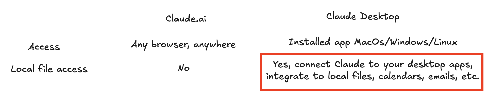
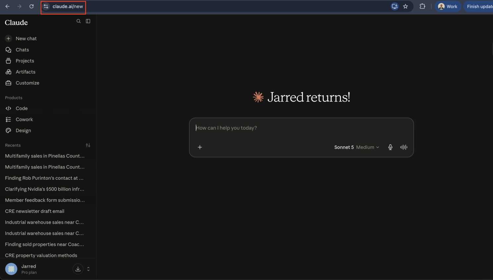
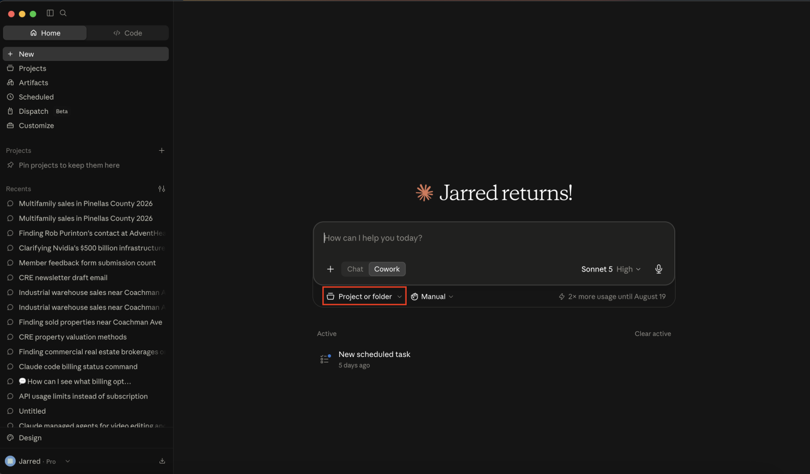
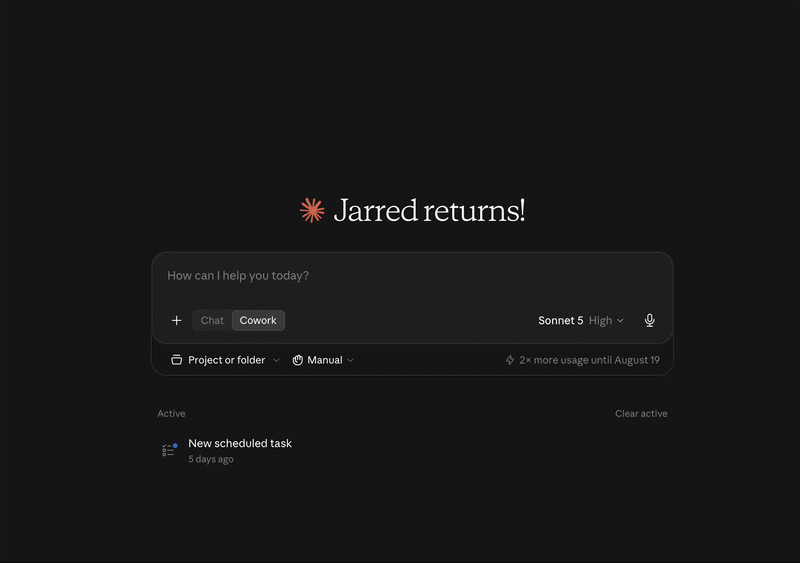
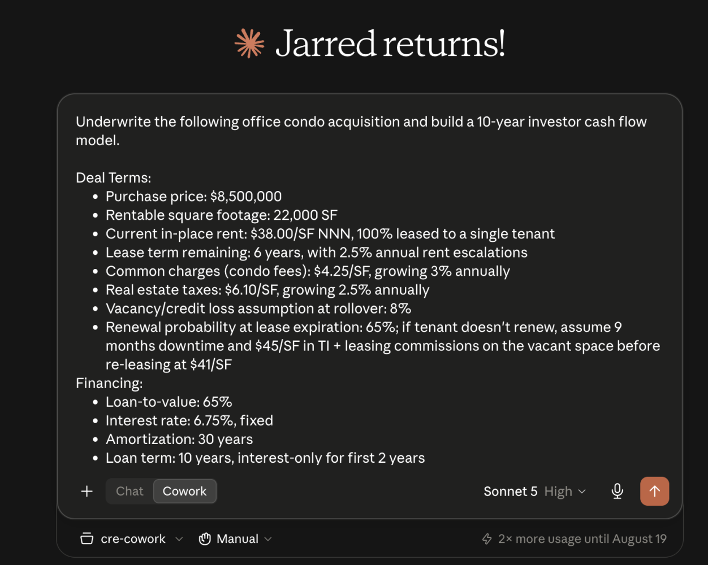
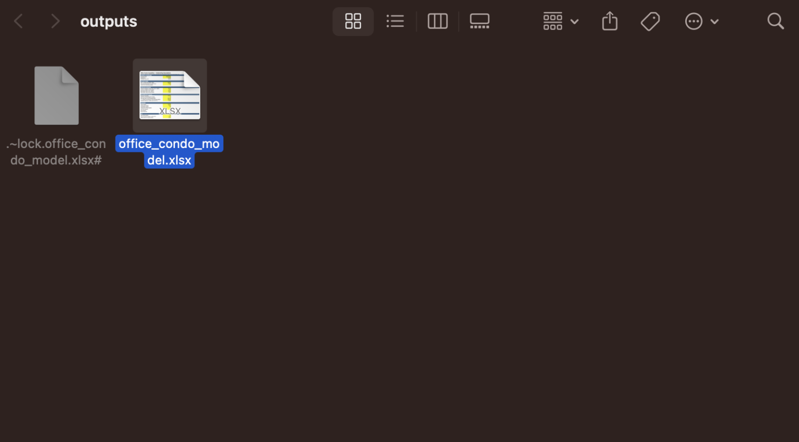

Claude in a browser answers questions about uploaded files. Claude Cowork can work directly in an approved project folder on your computer.
Most people think they are having Claude do real work inside their CRE operations, but are still using Claude like a browser chatbot.
If the workflow is upload, prompt, download, open, revise, and upload again, the team is still carrying the work between systems.
Let’s start by understanding the difference between claude.ai and Claude Desktop.

The most important thing to understand is that Claude Desktop can edit local files on your computer.
Setting up Claude Cowork
To use Claude Cowork, install the Claude Desktop application.

The interface looks similar to claude.ai, but you have the option to select Cowork.

Since Cowork has access to files on your computer, it works inside a project or folder you choose. Keep that scope deliberate: give it the folder it needs, not the entire machine.
Underwriting example
Let’s work through a common example in CRE.
Most teams are underwriting on claude.ai. They build pro forma models, Claude includes the file, they download it, and they open it in Excel.
Too many steps.
With Cowork, we can create an underwriting model and edit it directly on the computer.
First, let’s create a project.

Now that we have created our cre-cowork project, we can start building the model.

The underwriting model exists directly on the computer.

Next steps
Hopefully by now you have seen how Cowork lets Claude sit down and work directly in your files, on your own computer—no downloading, no re-uploading, and no bouncing between a browser tab and Excel.
Next, we will focus on routines. These let Claude do work while you are away.
Put Skills, connectors, and Cowork together and you have a teammate, not a chatbot.
Want this built into your workflow?
You just watched Claude build, edit, and save an underwriting model directly on the computer—no downloads, no copy-and-paste, and no re-uploading a spreadsheet fifteen times.
That is real work, not a chatbot answering questions.
This is the gap. Model capability keeps racing ahead every year, but most CRE teams are still using Claude like a search bar. Skills, connectors, and Cowork close it: reusable steps, live access to your CRM and Yardi, and a teammate that works directly inside your files instead of a chat window.
That is what we build for CRE teams: Skills tuned to your OM format, connectors wired into your CRM and property systems, and Cowork running the underwriting itself so deals move without you touching five different tabs.
If your team is using Claude but it is not making a real impact, book a free workshop with us.
The real upgrade is not a better answer. It is a model that can continue working on the same approved files your team will actually use.
Originally published in the altr’d newsletter on LinkedIn.